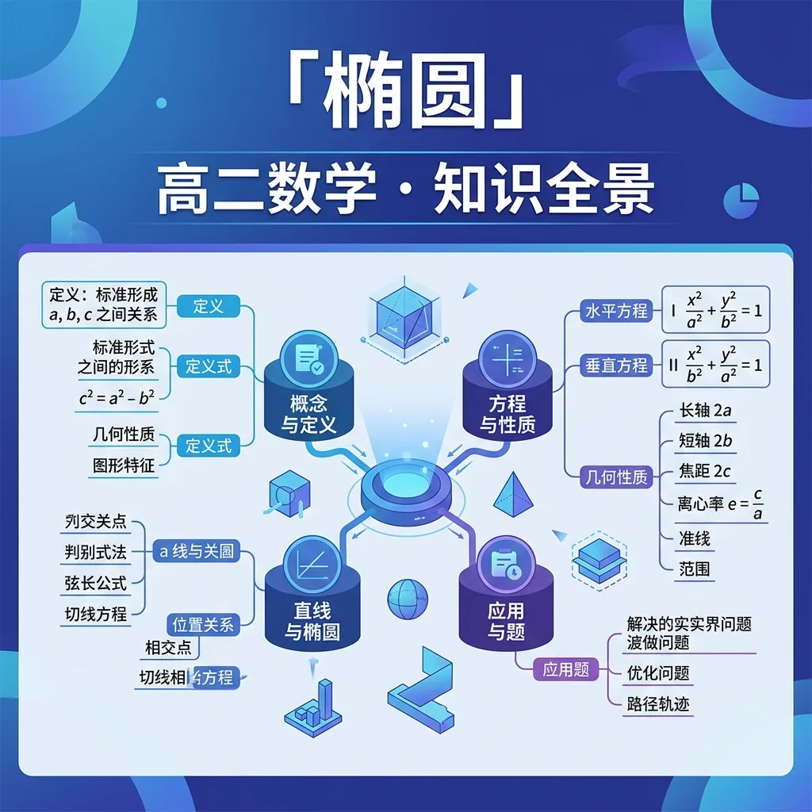

椭圆——高中数学核心知识

能用自己的语言解释椭圆的核心概念和定义
能运用标准方程及推导解决具体问题
能在新情境中灵活应用椭圆的知识
你正在学习椭圆，需要掌握其核心概念和方法
💡 本课的前置知识：圆的方程
关于"椭圆的定义"，下列说法正确的是？
And 你已经掌握了基本的数学概念
But 仅凭已有知识，无法深入理解椭圆的定义的内涵与应用
Therefore 所以学习椭圆的定义——掌握其定义、方法和应用
椭圆的定义是椭圆中的重要内容。
详见课本相关章节的详细定义和推导过程。
注意审题，仔细计算，检查每一步
关于"椭圆的定义"，下列说法正确的是？
And 你已经掌握了椭圆的定义
But 仅凭已有知识，无法深入理解标准方程及推导的内涵与应用
Therefore 所以学习标准方程及推导——掌握其定义、方法和应用
标准方程及推导是椭圆中的重要内容。
详见课本相关章节的详细定义和推导过程。
注意审题，仔细计算，检查每一步
关于"标准方程及推导"，下列说法正确的是？
And 你已经掌握了标准方程及推导
But 仅凭已有知识，无法深入理解几何性质a/b/c/e的内涵与应用
Therefore 所以学习几何性质a/b/c/e——掌握其定义、方法和应用
几何性质a/b/c/e是椭圆中的重要内容。
详见课本相关章节的详细定义和推导过程。
注意审题，仔细计算，检查每一步
关于"几何性质a/b/c/e"，下列说法正确的是？
And 你已经掌握了几何性质a/b/c/e
But 仅凭已有知识，无法深入理解焦点三角形的内涵与应用
Therefore 所以学习焦点三角形——掌握其定义、方法和应用
焦点三角形是椭圆中的重要内容。
详见课本相关章节的详细定义和推导过程。
注意审题，仔细计算，检查每一步
关于"焦点三角形"，下列说法正确的是？
拖动滑块观察变化 · x²/a²+y²/b²=1
回顾本课核心概念，用自己的话总结椭圆的定义和关键性质。
选择一个真实场景，运用椭圆的知识建立模型并分析。
设计一道关于椭圆的原创综合题，要求融合至少两个关键概念，并给出详细解答。
关于"焦点三角形"，下列说法正确的是？
用椭圆的知识解决一个实际问题，写出完整的解题过程。
椭圆的定义的常见错误：注意审题，仔细计算，检查每一步
标准方程及推导的常见错误：注意审题，仔细计算，检查每一步
几何性质a/b/c/e的常见错误：注意审题，仔细计算，检查每一步
焦点三角形的常见错误：注意审题，仔细计算，检查每一步
椭圆是平面上到两个定点（焦点）的距离之和为定值的点的轨迹。数学表达式为：PF₁ + PF₂ = 2a，其中a > c（c为焦距）。标准方程分为两类：(1) 长轴平行x轴时：(x-h)²/a² + (y-k)²/b² = 1；(2) 长轴平行y轴时：(x-h)²/b² + (y-k)²/a² = 1。例如卫星轨道设计时，地球处于椭圆的一个焦点位置，根据开普勒第一定律，卫星到地球的距离之和恒定。参数a、b、c满足关系a² = b² + c²，这可用于计算人造卫星轨道的远地点和近地点距离。
椭圆具有对称性、封闭性等几何特征。对称轴为长轴（2a）和短轴（2b），离心率e = c/a（0 < e < 1）描述椭圆的扁平程度。当e接近0时趋近于圆，e接近1时变得扁平。例如体育场的跑道设计：标准400米跑道由两个半圆和两条直线组成，若改为椭圆设计（e≈0.6），可增加直道长度提升短跑成绩。另一个案例是汽车头灯的反射镜面，利用椭圆的光学性质（从一个焦点发出的光经反射会聚到另一焦点）实现精准照明。通过卡纸实验可直观验证：固定绳子两端（焦点），用笔绷紧绳子画出的图形即为椭圆。
椭圆的参数方程为x = a·cosθ, y = b·sinθ（θ∈[0,2π)），常用于解决与角度相关的问题。例如行星运动问题：某行星轨道半长轴3×10⁸km，离心率0.2，当θ=π/3时，行星到太阳（焦点）的距离r = a(1-e²)/(1+e·cosθ) ≈ 2.76×10⁸km。参数方程在工程中也有广泛应用，如隧道掘进机的刀盘运动轨迹、数控机床的椭圆轮廓加工等。特别地，当需要计算椭圆弧长时，需使用第二类椭圆积分，这解释了为什么没有初等函数表达的精确公式。学生可通过编程绘制参数方程图像（如Python的matplotlib库）直观理解θ与点的对应关系。
圆是椭圆的特例（a=b时），通过伸缩变换可实现相互转化。将单位圆x²+y²=1沿x轴方向伸缩a倍，y轴方向伸缩b倍，即得标准椭圆方程。例如地理中的地图投影：墨卡托投影将地球仪（近球体）变为圆柱地图时，高纬度地区会出现椭圆变形。数学证明可用矩阵表示变换：[[a,0],[0,b]]·[cosθ,sinθ]ᵀ = [a·cosθ,b·sinθ]ᵀ。在计算机图形学中，这种变换用于快速生成椭圆——先绘制圆再应用缩放矩阵。实验建议：用透明薄膜画圆，拉伸薄膜观察图形如何变为椭圆，测量变形前后的轴长验证a/b的比例关系。
椭圆切线具有重要光学性质：切线与焦点半径的夹角相等。数学表达为：在点P处的切线与PF₁、PF₂形成等角。应用案例包括：1) 椭圆镜面太阳能灶，将热源放在F₁时，反射热能会聚于F₂；2) 声学设计中的椭圆穹顶，使得F₁处的 whispers 能在F₂清晰听到（如美国国会大厦的低声廊）。切线方程推导方法：对标准方程隐函数求导得dy/dx = -b²x/(a²y)，再用点斜式写出方程。例如椭圆x²/9 + y²/4 = 1在点(1.5,√3)处的切线方程为x/6 + √3y/4 = 1。学生可用几何画板动态验证：移动切点时，测量两个角度始终保持相等。
开普勒第一定律指出行星轨道是椭圆，太阳位于焦点。根据万有引力定律，可推导出轨道方程r = ed/(1+e·cosθ)，其中d为准线距离。典型数据：哈雷彗星轨道e≈0.967，近日点0.586AU，远日点35.1AU（1AU=地球轨道半长轴）。另一个案例是电子轨道：在量子力学中，电子云分布概率密度函数的等值面形成椭球。物理实验演示：用磁力轨道和小球模拟——固定两个磁铁（焦点），给小球初速度可观察到椭圆运动。数学建模任务：已知地球轨道a≈1.496×10⁸km、e≈0.0167，计算冬至（θ=π）和夏至（θ=0）时的日地距离差约500万公里。
1) 建筑学：罗马万神殿的穹顶截面是半椭圆，实现力学与美学的统一；2) 医学：体外冲击波碎石机的反射体呈旋转椭球面，将波源置于第一焦点，结石位于第二焦点；3) 艺术：达利的名画《永恒的记忆》中，变形的钟表轮廓符合椭圆方程；4) 工程：椭圆齿轮用于变速传动，当主动轮匀速转动时，从动轮实现周期性变速。计算案例：设计一个长轴6cm、短轴4cm的椭圆齿轮，齿数Z=40，则周长近似公式L≈π[3(a+b)-√(10ab+3(a²+b²))]≈15.87cm，模数m=L/Z≈0.4mm。建议学生收集生活中的椭圆实例（如鸡蛋剖面、游泳池形状等）并尝试建立数学模型。
解决椭圆问题需掌握几何与代数两种思路：1) 几何法：利用定义、焦点三角形面积公式S=b²·tan(θ/2)（θ为焦点夹角）等；2) 代数法：联立直线与椭圆方程时，判别式Δ>0确保相交。典型例题：已知直线y=kx+2与椭圆x²/4+y²=1相交于A、B两点，当k为何值时OA⊥OB（O为原点）？解法：联立得(1+4k²)x²+16kx+12=0，设A(x₁,y₁),B(x₂,y₂)，由OA·OB=0得x₁x₂+y₁y₂=0，转化为(1+k²)x₁x₂+2k(x₁+x₂)+4=0，利用韦达定理最终解得k=±2。错误警示：忽略Δ>0的条件会导致增解，实际k∈(-√3/2,√3/2)。
1. 如何用一根绳子和两个图钉绘制椭圆？2. 圆与椭圆在标准方程上有何联系与区别？
1. 椭圆x²/16 + y²/9 = 1的离心率是多少？2. 过点(3,0)且与椭圆x²/9 + y²/4 = 1相切的直线方程是什么？
常见错因：混淆椭圆的长短轴与xy轴的对应关系。误区：认为标准方程中分母大的项一定对应长轴，实际上需比较a²与b²的大小。诊断方法：先确定a>b的条件，若方程右边不是1需先化为标准形式。例如方程4x²+9y²=36实际对应a=3（y轴方向），而非表面看来的x²项系数更小。
迁移挑战：设计一个椭圆轨道太阳系模型，要求：1) 选择3颗行星计算其轨道参数（a、e）；2) 用几何画板模拟运行；3) 分析当离心率超过0.99时轨道会呈现什么特征？
先独立作答，再点选项查看对错与错因。
在椭圆的标准方程中，长轴的长度为2a，短轴的长度为2b。若椭圆的焦距为2c，则下列关系正确的是：
若椭圆的中心在原点，焦点在x轴上，且长轴长度为10，短轴长度为6，则椭圆的标准方程为：
在设计卫星轨道时，若地球半径为6371公里，卫星高度为35786公里，则椭圆的半长轴a为：
椭圆的标准方程为x²/a² + y²/b² = 1，若a=5，b=3，则椭圆的焦距c=____。
答案：4
根据椭圆的性质，c² = a² - b²，即c² = 25 - 9 = 16，故c=4。
若椭圆的半长轴a=8，半短轴b=6，则椭圆的离心率e=____。
答案：0.6
椭圆的离心率e = c/a，其中c² = a² - b² = 64 - 36 = 28，故c=√28≈5.29，e=5.29/8≈0.6。
关于椭圆的离心率e，下列说法正确的是：
探究椭圆轨道参数与卫星运行速度之间的关系，分析不同离心率对卫星轨道的影响。